──
これからN.O.Mスタッフと大谷を含めた４人で、普段のカウンセリングで行われているぬり絵を実際に体験して、末永先生に見ていただこうと思います。
江崎
こちらに色鉛筆とクレヨンがありますので、好きなように使って描いてください。
末永
クレヨンは心理的にも描きやすくて、人気がある画材なんです。この絵の設定は「オンとオフの私」ということで、お仕事をしている時と、お休みの時の気分を描いてください。2人いますが、どちらがオンでもオフでも構いません。
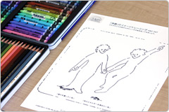
──
こうして前にすると結構悩みますね（笑）
大谷
最初はそうですね（笑）。
末永
理屈抜きでピンときたものを感覚的に気分でぬっていいんです。
（全員しばらく黙々と描き続ける）
（全員しばらく黙々と描き続ける）
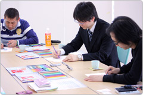
──
特に途中で声をかけられたりはしないんですか？
末永
そうですね。みなさん真剣に描いているところで邪魔しちゃいけませんし（笑）。あ、大谷さんは子供まで出現していますね。元の絵柄にないものも付け加えていいんです。人によっては元の絵とは全然違うものになる場合もありますし。
江崎
描き加えてみると、それでちょっと満足できたりします。
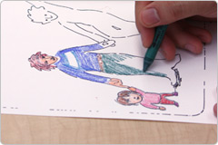
末永
映画を見て泣いちゃうのにも似ていて、人間ってバーチャルなものでも、それで一回気持ちを消化できるんですね。女性だと、着てみたいと思って服を買ったけど、あまり着なかったという経験は多いと思うんですが、そういう意味では絵の中の自分に着てみたい服を描いてしまえば経済的かもしれません（笑）。
江崎
そのときどきの自分が好きだった色を記録していく「カラーヒストリー」では、女性だと特にその頃の心理と服の色がリンクしていることが多いですね。
末永
たとえばお化粧などもそうですね。やはり男性よりも女性の方が、色を使う機会が多いためか、物事を色でとらえる回路が発達しやすいようです。
大谷
ちなみに男性は形で認識する回路の方が強いとも言われていますね。
末永
そうですね。やはり使っていれば発達するということなのかなと思います。
──
では、そろそろぬり終わったようなので、見ていただきましょう。
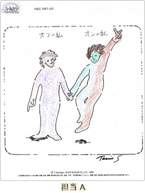
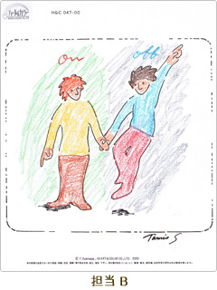
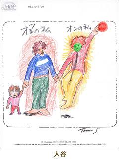
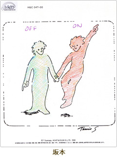
末永
全体的には、オンの方に暖色系を使っているのが多いようですが……半分ずつになっているものもありますね。顔が緑になっているものがありますが……。
担当A
昨日、頭が痛くて、同僚に顔色が悪いと言われたんです。
一同
（笑）
江崎
大谷さんは頭も真っ赤ですね（笑）。
末永
オフの方で子供と手をつないでいますが、お休みの時はお子さんとたっぷり時間を取られるんですね。オンの時の手の先のオレンジっぽい赤は面白いですね。
大谷
次の仕事のことを考えていて、何かをつかみたいなとか考えていました。
江崎
こちらが手に持っているのは……？
担当A
Wiiのリモコンです。仕事道具です（笑）。
末永
やはりお仕事のことが気になっているんですね。
江崎
オフの方は紫で、オンの方は赤と青の2色にわかれている。
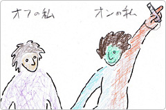
担当A
休みの日は、あまり外に出ていかないんですよ。どんよりとしていることが多いので。仕事の時は、がんばる時もあれば……。
江崎
ちょっと冷静に判断している時もある、と。
一同
（笑）
江崎
これは色彩学的には面白いんですよ。紫というのは、赤と青を混ぜると出てくる色なので。オンの時は意識的に使い分けているけど……。
末永
オフの時はそれを中和しているんですね。仕事の時はメリハリをつけなきゃいけないけど、お休みの時はそういうことを気にせずリラックスしている。対比が強い色が出るっていうのも、交感神経が優位になっているということなんです。
江崎
担当Bさんのは、赤と青がオフの方に出ていますね。
末永
やっぱりお休みの時は元気なのかな？でもただ楽しんでいるだけじゃなくて、何か挑戦したいとか、一生懸命取り組んでいるものがある？
担当B
まさにその通りです。音楽の自宅録音をやっていることが多いですね。
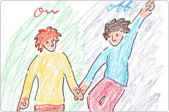
末永
赤と青の対比というのは、ボクシングでも赤コーナーと青コーナーなどがありますが、向上心がよく出るんですよ。逆にオンの方は茶系で落ち着いていますね。お休みの時に好きなことをやれているから、お仕事に集中できるということも言えますよ。上半身が黄色なのは、自分のお仕事のセクションでアピールしたいものがあるということかと思います。
末永
坂本さんはお休みの時はどうされていますか？
坂本
ボンヤリしていますね（笑）。
大谷
確かにボンヤリ感が出てますよね。
一同
（笑）
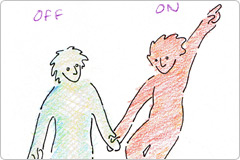
坂本
ライターなので、基本的にずっと家にいて、仕事とプライベートの区別があまりないんですよ。なので、単純に外に出ている時がオン、家にいる時がオフというイメージです。
末永
なるほど。家で原稿を書いていてもオフだし、外で遊んでいてもオンということがあるわけですね。みなさんお仕事とお休みに対するスタンスがバランスが取れている印象ですね。
江崎
特に大谷さんは暖色と寒色がハッキリわかれていますね。オンの方に縦に黒い線が入っているのも面白い。
大谷
新しいことをやろうとしていて、のるかそるかのラインというイメージです。もうすぐ大事な会議もあるもので……。
末永
頭も赤いし手も何かをつかみたいと（笑）。あと、オーラの分量はオフの方が多いんですよね。プライベートが充実しているというのがよく出ています。
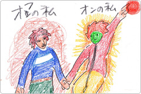
江崎
顔が緑になっているのは、何かイメージはありましたか？
大谷
昨日ちょっと頭が痛かったのと、虫歯の治療をしているというのがありました。
江崎
さっきの縦のラインみたいなところにも、そういう体調に対する不安が出ることがあります。
大谷
ああ、そういう意味でしたら、まさにちょっと前に受けた精密検査で引っかかっているところがあるので、それかもしれません。
末永
健康状態で気になっているところに黒っぽいものが出ることが多いんです。ぜんそく持ちの子供だと、不思議と胸のところに大きな黒いボタンを描いたりするんです。こういう不安は、出すことによって解消する部分があるんです。閉じ込めてしまうと増幅するので。
江崎
組織で仕事をしているのか、個人で仕事をしているのか、も出ていますね。
末永
担当Bさんのは、周囲をぬって、自分の外の人間関係を意識しているのがわかります。坂本さんのは、とりあえずまわりはいいかなという感じ（笑）。
坂本
確かに外側をぬるという発想は一切なかったですね（笑）。
江崎
どこから描きはじめるのかというのも、実は重要なんですよ。新入社員研修でこのぬり絵を行うと、ほとんど中が真っ白という人が多いんです。どういう自分が求められているのかをリサーチしているような状態なんですね。ほかには家庭のことで手一杯な子育て中のお母さんでも、そうなることがあります。
末永
要するにまわりに意識が集中しすぎていて自分のことが抜けちゃってる。あとは、体を壊したりして、どうしていいかわからないという時にも白く抜けちゃう。
それにしても、みなさんこれだけハッキリといろいろ出てくるということは、表現力が豊かということだと思います。最初はちょっと時間がかかるんですが、『DSココロぬりえ』も何度もやっていると自分が出せるようになって、さらに自分のことも客観的にわかって楽しくなりますよ。
それにしても、みなさんこれだけハッキリといろいろ出てくるということは、表現力が豊かということだと思います。最初はちょっと時間がかかるんですが、『DSココロぬりえ』も何度もやっていると自分が出せるようになって、さらに自分のことも客観的にわかって楽しくなりますよ。
江崎
今回のように、ほかの人と比べたりグループでやると、さらにいろいろな違いがわかって面白いですよ。